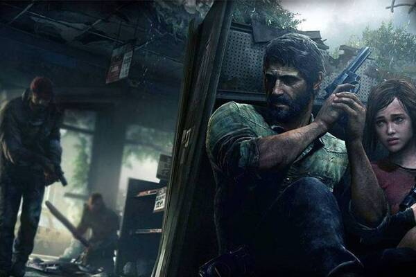

Enredo
Um surto de uma mutação do fungo Cordyceps arrasa os Estados Unidos em setembro de 2013, transformando seus hospedeiros humanos em monstros canibalísticos chamados de Infectados. Joel foge do caos dos subúrbios de Austin, Texas, junto com seu irmão Tommy e sua filha Sarah. Esta acaba baleada por um soldado durante a fuga e morre nos braços do pai. A maior parte da civilização humana acaba destruída no decorrer dos vinte anos seguintes.
